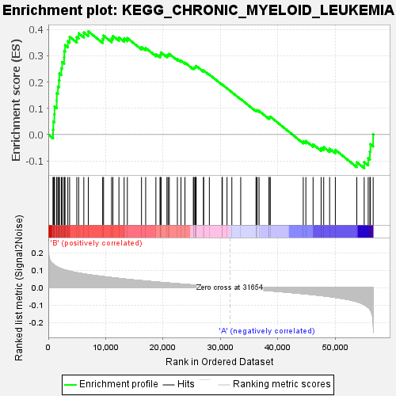
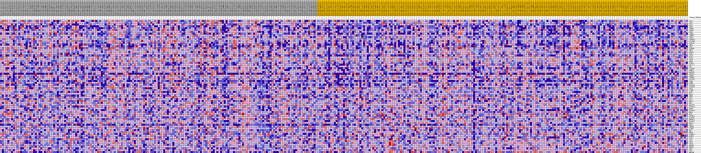
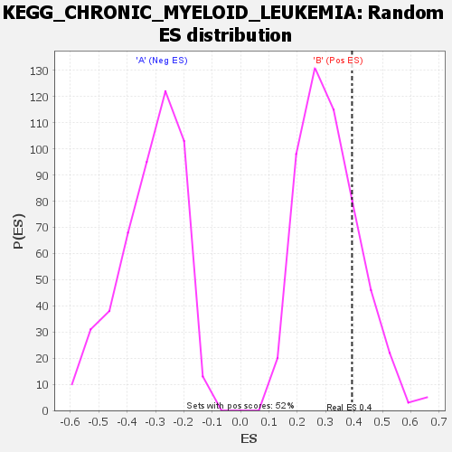

| | | Dataset | my.my.cls#B_versus_A.my.cls#B_versus_A_repos |
| Phenotype | my.cls#B_versus_A_repos |
| Upregulated in class | B |
| GeneSet | KEGG_CHRONIC_MYELOID_LEUKEMIA |
| Enrichment Score (ES) | 0.3927653 |
| Normalized Enrichment Score (NES) | 1.2530056 |
| Nominal p-value | 0.22884615 |
| FDR q-value | 0.4907206 |
| FWER p-Value | 0.959 |
Table: GSEA Results Summary

Fig 1: Enrichment plot: KEGG_CHRONIC_MYELOID_LEUKEMIA
Profile of the Running ES Score & Positions of GeneSet Members on the Rank Ordered List
| SYMBOL | TITLE | RANK IN GENE LIST | RANK METRIC SCORE | RUNNING ES | CORE ENRICHMENT | | 1 | ABL1 | na | 823 | 0.135 | 0.0178 | Yes |
| 2 | AKT2 | na | 864 | 0.133 | 0.0492 | Yes |
| 3 | E2F1 | na | 1048 | 0.129 | 0.0769 | Yes |
| 4 | SHC3 | na | 1085 | 0.128 | 0.1071 | Yes |
| 5 | TGFB2 | na | 1457 | 0.120 | 0.1295 | Yes |
| 6 | TGFB1 | na | 1477 | 0.120 | 0.1580 | Yes |
| 7 | CRKL | na | 1679 | 0.116 | 0.1824 | Yes |
| 8 | TGFB3 | na | 1848 | 0.114 | 0.2067 | Yes |
| 9 | IKBKG | na | 1935 | 0.112 | 0.2322 | Yes |
| 10 | CDK4 | na | 2264 | 0.108 | 0.2524 | Yes |
| 11 | CDKN1B | na | 2405 | 0.107 | 0.2756 | Yes |
| 12 | STAT5B | na | 2752 | 0.103 | 0.2942 | Yes |
| 13 | PIK3R1 | na | 2777 | 0.103 | 0.3185 | Yes |
| 14 | SHC4 | na | 2915 | 0.101 | 0.3405 | Yes |
| 15 | SHC2 | na | 3400 | 0.097 | 0.3552 | Yes |
| 16 | TGFBR2 | na | 3709 | 0.095 | 0.3725 | Yes |
| 17 | SHC1 | na | 4962 | 0.086 | 0.3710 | Yes |
| 18 | MAPK1 | na | 5290 | 0.084 | 0.3854 | Yes |
| 19 | E2F3 | na | 6185 | 0.079 | 0.3886 | Yes |
| 20 | AKT3 | na | 6968 | 0.075 | 0.3928 | Yes |
| 21 | RAF1 | na | 9467 | 0.064 | 0.3640 | No |
| 22 | ARAF | na | 9623 | 0.063 | 0.3765 | No |
| 23 | GRB2 | na | 11019 | 0.058 | 0.3657 | No |
| 24 | CCND1 | na | 11255 | 0.057 | 0.3753 | No |
| 25 | BCL2L1 | na | 12299 | 0.053 | 0.3697 | No |
| 26 | CBL | na | 13204 | 0.050 | 0.3657 | No |
| 27 | PIK3R5 | na | 13767 | 0.048 | 0.3673 | No |
| 28 | RUNX1 | na | 16233 | 0.040 | 0.3334 | No |
| 29 | MAP2K1 | na | 16959 | 0.038 | 0.3297 | No |
| 30 | CDKN2A | na | 18738 | 0.033 | 0.3062 | No |
| 31 | SMAD4 | na | 19454 | 0.031 | 0.3010 | No |
| 32 | TGFBR1 | na | 19572 | 0.031 | 0.3063 | No |
| 33 | STAT5A | na | 19640 | 0.031 | 0.3125 | No |
| 34 | CDK6 | na | 20659 | 0.028 | 0.3012 | No |
| 35 | CHUK | na | 20857 | 0.027 | 0.3043 | No |
| 36 | PIK3CG | na | 21068 | 0.027 | 0.3070 | No |
| 37 | PIK3R3 | na | 22479 | 0.023 | 0.2876 | No |
| 38 | TP53 | na | 23100 | 0.021 | 0.2817 | No |
| 39 | CTBP2 | na | 23798 | 0.020 | 0.2741 | No |
| 40 | E2F2 | na | 25257 | 0.016 | 0.2521 | No |
| 41 | RELA | na | 25360 | 0.016 | 0.2540 | No |
| 42 | MDM2 | na | 25536 | 0.015 | 0.2546 | No |
| 43 | SOS1 | na | 25614 | 0.015 | 0.2568 | No |
| 44 | BAD | na | 25699 | 0.015 | 0.2589 | No |
| 45 | HDAC2 | na | 25752 | 0.015 | 0.2615 | No |
| 46 | RB1 | na | 27035 | 0.011 | 0.2415 | No |
| 47 | MAP2K2 | na | 27050 | 0.011 | 0.2440 | No |
| 48 | PIK3CB | na | 28048 | 0.009 | 0.2284 | No |
| 49 | BRAF | na | 30251 | 0.003 | 0.1903 | No |
| 50 | PIK3CD | na | 30315 | 0.003 | 0.1900 | No |
| 51 | HRAS | na | 31126 | 0.001 | 0.1760 | No |
| 52 | BCR | na | 31967 | -0.001 | 0.1613 | No |
| 53 | PTPN11 | na | 33513 | -0.005 | 0.1351 | No |
| 54 | PIK3R2 | na | 36180 | -0.011 | 0.0906 | No |
| 55 | NFKBIA | na | 36221 | -0.011 | 0.0927 | No |
| 56 | PIK3CA | na | 36393 | -0.012 | 0.0925 | No |
| 57 | HDAC1 | na | 36704 | -0.013 | 0.0901 | No |
| 58 | KRAS | na | 38448 | -0.017 | 0.0634 | No |
| 59 | IKBKB | na | 38457 | -0.017 | 0.0674 | No |
| 60 | CTBP1 | na | 38667 | -0.018 | 0.0679 | No |
| 61 | MYC | na | 44399 | -0.034 | -0.0252 | No |
| 62 | NRAS | na | 44857 | -0.036 | -0.0247 | No |
| 63 | CDKN1A | na | 46114 | -0.040 | -0.0373 | No |
| 64 | MAPK3 | na | 47515 | -0.045 | -0.0513 | No |
| 65 | GAB2 | na | 47966 | -0.047 | -0.0480 | No |
| 66 | AKT1 | na | 48994 | -0.051 | -0.0539 | No |
| 67 | SOS2 | na | 49991 | -0.055 | -0.0583 | No |
| 68 | CBLB | na | 53730 | -0.079 | -0.1053 | No |
| 69 | SMAD3 | na | 55016 | -0.097 | -0.1048 | No |
| 70 | NFKB1 | na | 55714 | -0.113 | -0.0900 | No |
| 71 | CBLC | na | 56008 | -0.123 | -0.0655 | No |
| 72 | CRK | na | 56094 | -0.127 | -0.0365 | No |
| 73 | MECOM | na | 56577 | -0.190 | 0.0008 | No |
Table: GSEA details [plain text format]

Fig 2: KEGG_CHRONIC_MYELOID_LEUKEMIA
Blue-Pink O' Gram in the Space of the Analyzed GeneSet

Fig 3: KEGG_CHRONIC_MYELOID_LEUKEMIA: Random ES distribution
Gene set null distribution of ES for KEGG_CHRONIC_MYELOID_LEUKEMIA